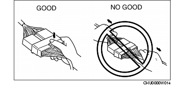
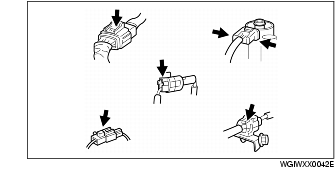
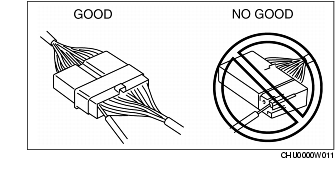
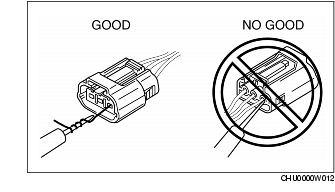

Electrical system
Connectors
Disconnecting connectors
-
• When disconnecting connector, grasp the connectors, not the wires.

-
• Connectors can be disconnected by pressing or pulling the lock lever as shown.

Locking connector
Inspection
-
• When a tester is used to inspect for continuity or measuring voltage, insert the tester probe from the wiring harness side.

- • Inspect the terminals of waterproof connectors from the connector side since they cannot be accessed from the wiring harness side.
- • To prevent damage to the terminal, wrap a thin wire around the tester probe before inserting into terminal.
